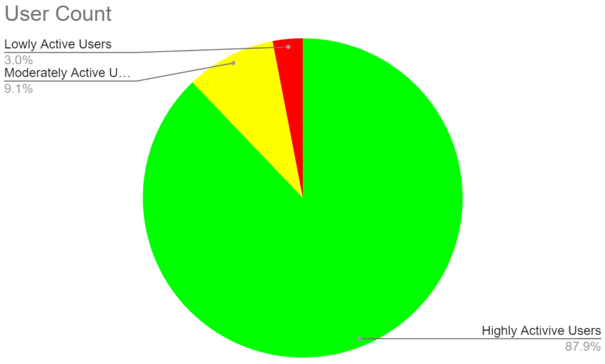
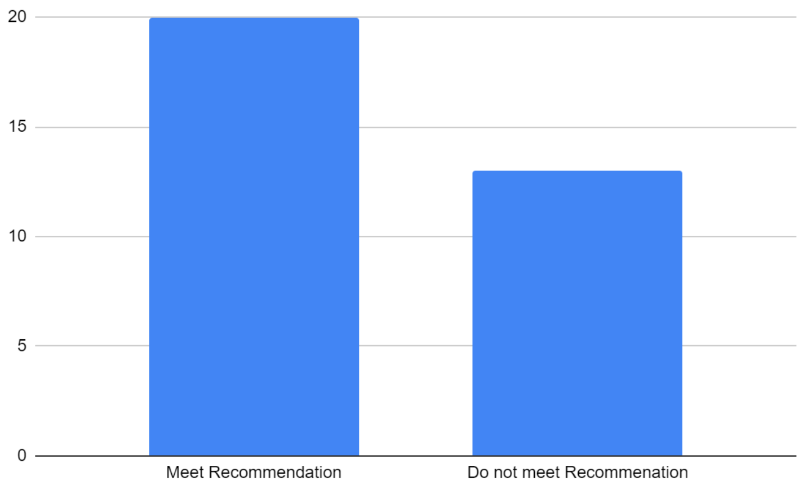
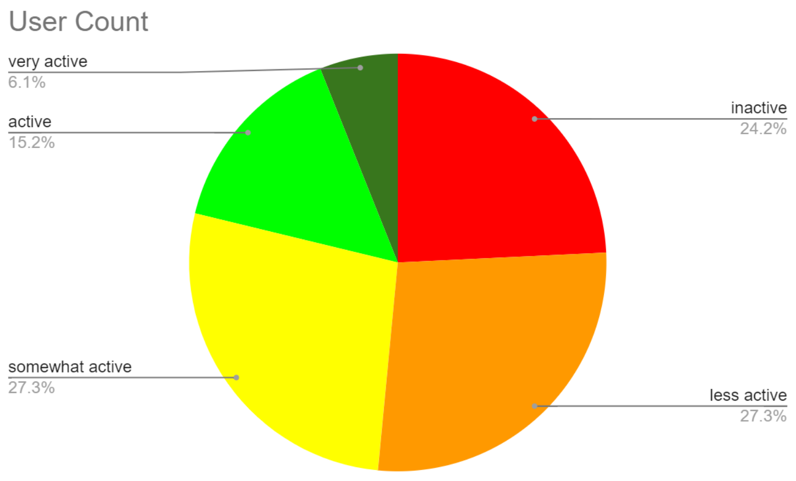
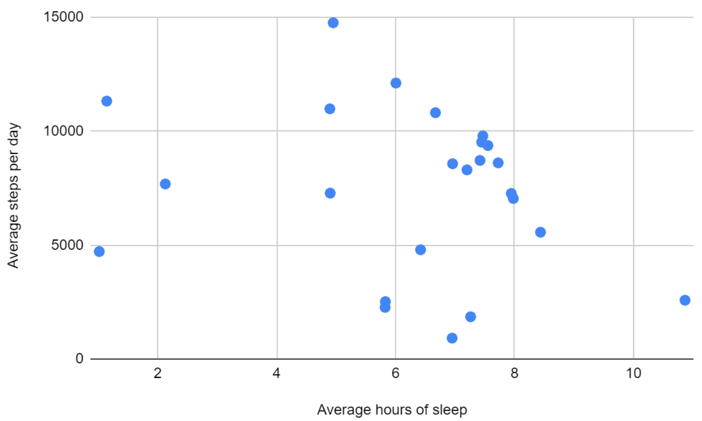

Smart Device Usage Analysis — Bellabeat Case Study
Exploratory analysis of Fitbit-style device telemetry to discover usage patterns, evaluate wellness behaviours, and recommend product & marketing actions for a health-focused wearables brand.
Project Type
Data Analysis & Insights
Core Technologies
BigQuery, Excel, SQL
Sector
Marketing
Impact
Product Insights & Targeting
Background & Goals
Bellabeat produces health-focused consumer products (wearable trackers, smart water bottles, and an app). The goal of this analysis was to identify usage trends from device telemetry that could inform marketing strategy and product nudges — e.g., which users are highly engaged, where activity and sleep patterns sit relative to public health recommendations, and what high-value messaging could increase engagement or subscription uptake.
The dataset used is a public, CC0-licensed Fitbit-style data collection covering device telemetry for ~30 users across ~31 days (multiple CSV files). The scope focused on daily activity, daily sleep, and hourly steps/calories/intensity.
Data Preparation & Validation
Files were downloaded locally and inspected in Excel for initial cleaning, then uploaded to Google BigQuery for analysis. The ROCCC checklist (Reliable, Original, Comprehensive, Current, Cited) was applied: the data proved original and largely reliable, though the sample size and lack of demographics limited generalisability.
- Selected tables: daily_activity, daily_sleep, hourly_calories, hourly_intensity, hourly_steps.
- Clean-up steps included date formatting (dd/mm/yyyy), time formatting, duplicate removal, and normalising numeric types.
- Uploaded clean CSVs to BigQuery and ran aggregation queries to count distinct users, days tracked, and per-user summaries.
Analysis & Findings
User Coverage & Engagement
After deduplication and date correction, 33 unique device IDs were present in most tables (daily_sleep tracked fewer users). Most users recorded activity on the majority of the 31-day window: ~82% missed three or fewer days, indicating generally high engagement with the devices (see Figure 1).
Figure 1 — Distribution of users by % days tracked (low / moderate / high usage).
Activity vs. NHS Guidelines
Using Fitbit category logic, weekly moderate activity was computed as 7 * (avg(VeryActiveMinutes + FairlyActiveMinutes)), and vigorous as 7 * avg(VeryActiveMinutes). A SQL aggregation showed how many users met the NHS guidance (150 minutes moderate or 75 minutes vigorous per week). Results indicate a majority met these thresholds (Figure 2).
Figure 2 — Count of users meeting NHS weekly activity recommendations (moderate / vigorous).
Daily Steps Distribution
Users were bucketed by average daily steps: inactive <5k, less active 5–7.5k, somewhat active 7.5–10k, active 10–12.5k, very active >12.5k. Most users fell below the 10,000-step guideline; only 7 users averaged ≥10,000 steps. However, 12 users reached 10,000 steps on at least one-third of their tracked days, signalling potential for behavioural nudges (see Figure 3).
Figure 3 — Users grouped by average daily steps category.
SQL Query used to derive Figure 3
SELECT Id,
avg(TotalSteps) AS avg_total_steps,
CASE
WHEN avg(TotalSteps) < 5000 THEN 'inactive'
WHEN avg(TotalSteps) BETWEEN 5000 AND 7500 THEN 'less active'
WHEN avg(TotalSteps) BETWEEN 7500 AND 10000 THEN 'somewhat active'
WHEN avg(TotalSteps) BETWEEN 10000 AND 12500 THEN 'active'
WHEN avg(TotalSteps) >= 12500 THEN 'very active'
END user_activity
FROM `southern-camera-336517.fitbit_tracker_data.daily_activity`
GROUP BY Id
LIMIT 1000;
Steps vs Sleep Correlation
Joining average daily steps with average nightly sleep produced a scatter plot revealing a cluster around ~8 hours sleep and ~10,000 steps — the public health targets. Most users sit below one or both targets; this suggests simultaneous opportunities to encourage both better sleep hygiene and daily activity (Figure 4).
Figure 4 — Average daily steps vs average nightly sleep per user.
SQL Query used to derive Figure 4
SELECT steps.Id,
avg(steps.TotalSteps) AS avg_total_steps,
avg(sleep.TotalMinutesAsleep) AS avg_total_minutes_asleep
FROM `southern-camera-336517.fitbit_tracker_data.daily_activity` AS steps
INNER JOIN `southern-camera-336517.fitbit_tracker_data.daily_sleep` AS sleep
ON steps.Id = sleep.Id
GROUP BY steps.Id;
Actions & Recommendations
- Daily nudges: Push morning reminders and incremental step notifications (e.g., every 2,500 steps) to encourage progress toward 10,000 steps.
- Battery & engagement reminders: Send end-of-day prompts to recharge devices and short tips to encourage consistent tracking.
- Education on active minutes: Provide in-app content explaining 'VeryActive' vs 'FairlyActive' minutes and why they matter to wellbeing.
- Targeted marketing: Prioritise product upsell and membership offers to highly engaged tracker users — they are more likely to value additional wellness services.
Limitations & Further Research
This exploratory analysis is constrained by a small sample size, limited collection window, and absence of demographic attributes (gender, age, location). These limitations reduce the strength of product-specific recommendations for Bellabeat’s female-focused market.
Suggested next steps: run a larger, gender-focused data collection, incorporate geographic and age metadata, and augment telemetry with short user surveys to surface motivations and barriers (the "why" behind the telemetry). These steps will unlock richer segmentation and more effective product & marketing strategies.